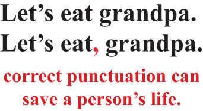
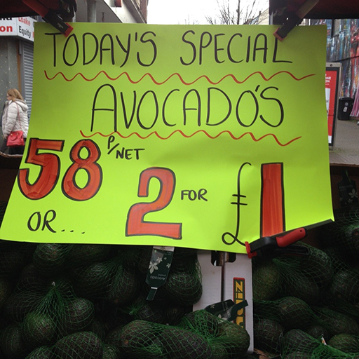

1 Why does grammar matter?¶
In this introductory activity you will hear a short extract from an interview with Lise Fontaine, a Senior Lecturer in the School of English, Communication and Philosophy at the University of Cardiff. She is widely known for her work in Systemic Functional Linguistics, and is author of the book Analysing English Grammar: A Systemic Functional Introduction (Fontaine, 2013).
Activity 1: Why is grammar awareness important?¶
Timing: 15 minutes
Question¶
Listen to the interview with Lise Fontaine and then answer the following questions:
What two reasons does Lise give for the importance of raising one’s knowledge about grammar?
Do you agree with Lise? Can you think of any other reasons why it may be worth while studying grammar?
Figure 1 Lise Fontaine
Interview with Lise Fontaine
LISE FONTAINE: I think that people really underestimate why grammar matters. It doesn’t matter because we need to improve the way people speak, or we need to have everybody going to university, or whatever reasons you might come up with. But there are two reasons why I think grammar is really important and it needs our attention.; One is that success in almost everything – anything – means you need good communication skills. That could be because you’re a parent; it could be because you’re in a relationship; it could be because you’ve got to negotiate a contract; it could be because you’re having to handle calls in a call centre. There could be lots of reasons why you need that kind of flexibility, adaptability and dexterity, really, with the language. This is something that all kids have very early, and school takes it out of them for the vast majority of the time. That’s not for everybody, but I think, as a population, that that’s the case.; So it’s about self-esteem and confidence, as well. It’s about having that feeling that you can solve problems, and we need communicative strategies to do that. It’s part of our thinking processes.; The second point is the age we’re in. We’ve gone through various ages, and we’re now in probably what people would call the information age, possibly even passing out of that into the digital age, I’m not sure. But what’s very fascinating about this age – mobile technologies and everything – it’s put in the hands of everybody the desire to communicate much more so than it ever was before.; So you have people who probably never would’ve used a computer using a computer, and they’re on Facebook, and they’re on Twitter, and some of them are writing blogs, and they’re contributing in a way that people wouldn’t have thought of doing 20 years ago. And so there’s a new kind of literacy that’s developing, it’s a digital literacy. And at the basis of it all is language, and those who master it will do better. They’ll achieve different things, possibly better things, because of it.; So there’s information and technology on the one hand, and that can relate to success and career and personal development. On the other hand, there’s a fundamental right, I suppose I might call it, to value the language that you have and that you’re using and to develop it to a point that you feel confident about it. And I think that that probably captures everything in life, and it puts grammar, really, right at the centre.; |
Discussion¶
The first reason Lise gives for grammar being important is that success in almost anything means you need good communication skills, whether this is in your role as a parent, in your social relationships, when you negotiate a contract, or handle calls in a call centre. All these roles and tasks require flexibility and dexterity with language, and perhaps especially oral language. There is an implicit assumption in what Lise says that a dedicated study of grammar will provide someone with the understanding they need to develop such skills. The second reason given by Lise is that the age we live in – labelled by Lise as moving from the information into the digital age – puts communication in the hands of us all. Everyone has the possibility to use mobile technologies, Facebook, Twitter and to write blogs. This generates demand for a new kind of literacy – a digital literacy. And again, the assumption here is that a heightened awareness of what language can do is very useful in developing digital literacy skills.
Lise argues persuasively for the value of grammar awareness particularly in the context of a world in which many more of us are text producers as well as readers. However, some would argue that, rather than focus on grammar per se, it is more helpful to think of language awareness, as the word ‘grammar’ can seem off-putting to some people. You may have come up with a number of other reasons why it may be worthwhile focusing on grammar – for example:the importance of giving a good impression of yourself as a writerenhanced ability to pass exams and succeed in job applicationsgetting your message across clearlyupholding proper standards of language use.
1.1 Different reasons why grammar matters¶
Why is grammar important? The next activity asks you to reflect further on different reasons for the importance of grammar.
Activity 2: A matter of life and death?¶
Timing: 15 minutes
Question¶
Consider the following piece of light-hearted punctuation advice, which popped up in numerous places on the internet when the author of this course searched for ‘grammar’ (19 January 2016). What message does it seek to convey about the importance of grammar?

Figure 2 A matter of life and death?
Discussion¶
On one hand this grammatical joke is intended to suggest that grammar can be important because it is crucial to meaning, and that the meanings we convey in words have real consequences. The comma signals that Grandpa is the addressee of the imperativeLet’s eatand so includes him as one of the ‘eaters’. Without it, Grandpa becomes the object of the verbeat: he is to be eaten. On the other hand, there is a strong element of tongue-in-cheek here which acknowledges that grammar is in fact rarely – if ever – a matter of life and death. In practice, unless these words were used following a fatal plane crash in a remote location, it is highly unlikely that the words Let’s eat grandpa – however punctuated – would be misinterpreted as an exhortation to cannibalise an older member of the family. In any case, these words are far more likely to be spoken, when intonation would take the place of punctuation in helping to make sure that listeners do not misinterpret.
We can use this example to illustrate that not all grammatical changes affect meaning. For example, if we left out the apostrophe in Let’s, which indicates that the u in us has been left out, there would be no loss or distortion of meaning. In this case, incorrect grammar would only be a superficial problem: it might make us question the attention to detail of the text producer, or even cause the reader to make negative social judgements about the writer, for instance, but it would have no significant impact on the substance of the message.
Another example of a superficial problem of incorrect grammar is the well-known extraneous ‘grocer’s apostrophe’. Although references to potatoe’s or pineapple’s may irritate some customers, it does not usually lead to misunderstanding.

Figure 3 The greengrocer’s apostrophe
Many of the debates about the significance of grammar and the importance of studying it involve some confusion between these two issues – a concern with ‘meaning’ on one hand and a concern with rules and standards on the other (though sometimes, of course, both concerns may be relevant at once). In this course we will be chiefly interested in the significance of grammar in making meaning, rather than with the formal rules of English for their own sake, or with the social connotations of ‘good’ and ‘bad’ grammar.
1.2 Meaning and consequences¶
The next activity asks you to look at a much more serious example of how grammar as a carrier of meaning can have serious consequences in the real world.
Activity 3: Grammar in the court room¶
**Timing: 15 minutes **
Question¶
Figure 4 A traditional formal courtroom
Imagine you are observing a trial involving a child witness. A barrister is cross-examining the child. Consider these two alternative forms of questioning and use the blank text box to note answers the questions below.
Did you hit him first?
You hit him first, didn’t you?
What differences in grammatical form do you notice between the two examples? (Don’t worry if you are not familiar with grammatical terminology, just note any differences in your own words.)
What sort of response does each question call for?
What potential problems can you foresee in the second example?
Which do you think you are most likely to hear in a courtroom?
Discussion¶
The first is a question or interrogative sentence. In the second sentence, the main clause of the sentence is an assertion, or declarative clause, followed by the question tagdidn’t you?
These utterances call for slightly different sorts of response. The first calls simply for an answer to the question, without proposing what that answer should be. The second makes a proposition and invites the other person to challenge the proposition.
The second version potentially ‘leads’ the witness, who has to actively reject the barrister’s assertion if they wish to deny being the first to hit out. In the context of the courtroom the experienced adult barrister is in a very powerful position in relation to a young child in the witness box for the first time. By choosing this assertive wording in cross-examination, a barrister enacts their authority over the child and consequently there is a risk that the child will falsely agree to a proposition because they feel unable to challenge the ‘voice of authority’. This increases the risk of miscarriages of justice in such cases.
It is difficult to be sure which question is most likely in a courtroom, and this will differ from one legal jurisdiction and culture to another. However, eminent members of the legal profession have argued that there is too much of the second type of wording in courtroom language where vulnerable witnesses are being cross-examined.
This example illustrates how different grammatical choices can have serious consequences. In 2013, Lord Judge, retired Lord Chief Justice of England and Wales, called for a major overhaul of the way in which children were cross-examined in court. In a BBC interview, he expressed profound concern for the 40,000 children a year who are called to give evidence in England and Wales in criminal proceedings, criticising the current system in strong terms (Today, 2013). One of the main reasons for Lord Judge’s objections hinged on the language that barristers acting for the defence were using to cross-examine child witnesses. In the example above, which was given by Lord Judge himself, the meaning of the declarative+ negative __question tag __may be only subtly different to that of an interrogative clause. However, the difference is highly significant in terms of the social relationships in the exchange.
Activity 4: Grammar: form or function?¶
Timing: 10 minutes
Question¶
Think back to how you learned grammar at school, either in English or other languages you learned. What terms do you remember learning?
Discussion¶
Everyone will have their own recollections of grammar at school – not all of them positive! You may have made a note of learning such terms as noun, verb, pronoun, adverband* adjective. In some cases, you may have learned aboutpast, present andfuture tense* verbs. In some languages you may have learned about how to ensure agreement between verbs and nouns or pronouns, for example if they need to be plural or singular forms. In other languages you may have learned about word gender, i.e. whether a word is masculine, feminine or neuter, for example. Many of us would also have recollections of grammar as being about writing in complete sentences, using punctuation correctly, and so on. All of these terms are linked to an understanding of grammar as a question of form and structure rather than of function.
1.3 Functional grammar and its uses¶
Another way of understanding the importance of grammatical choice is to see it in terms of how language is functioning in any given text or interaction. For example, depending on the choices made in the courtroom case in Activity 3, language can function to intimidate and exercise power over a witness (or to reassure and empower them) as well as seeking information. This emphasis on function rather than form gives rise to the terms functional grammar and Systemic Functional Linguistics (known as SFL for short). A functional perspective holds that language looks the way it does because of the functions it fulfils, in other words, how we use it to make meaning. This perspective focuses on how forms perform a range of meaning functions, rather than on form in itself. The next activity explains further what this approach can offer.
Activity 5: The value of a functional perspective on grammar¶
Timing: 15 minutes
Question¶
In this activity you will listen to two brief extracts from an interview with the late Geoff Thompson, another well-known educator and researcher in the field of SFL. He is widely known and recognised for his work on functional grammar, and is author of the book Introducing Functional Grammar (Thompson, 2014).
Figure 5 Geoff Thompson
As you listen, consider the associated questions.
What is formal grammar? What is functional grammar? How do they differ?
Geoff Thompson interview (1)
GEOFF THOMPSON: I’m Geoff Thompson. I was a senior lecturer at Liverpool University until I retired. The move from formal to functional grammar I think is a move from the kind of grammar that people often know about – often, not very confidently; but they’ve heard about it at school or texts about language.; Things like being able to identify nouns and verbs and knowing what they are. That’s more at the formal end of the spectrum where you’re really just trying to break up a sentence into its parts. When you move towards functional, you’re thinking about what are these bits of the sentence doing and what is the sentence as a whole doing.; Why has the speaker or writer expressed it in this way? What else could they have said? Why didn’t they say it that way? Why was it that this seemed to be the most effective way of expressing what they want to express.; |
In which other professional areas, apart from education, does Geoff suggest an increased knowledge of grammar might be put to use?
Geoff Thompson interview (2)
GEOFF THOMPSON: Grammar is relevant not only in educational contexts but in a number of other contexts, or perhaps, rather than grammar, an understanding of how language works, more generally. I don’t think you need to use grammatical terminology to analyse texts in the way that a linguist would recognise, but, for example, advertisers – advertisement writers – are typically highly skilled users of language. And part of their training will be to learn how to manipulate language to make it as persuasive as possible in the kind of context they’re working in.; It’s become increasingly recognised, for example, in training of doctors that they need to be trained how to interact with patients. That it’s no good just having the knowledge – they need to do other things in patient consultations. And a knowledge of language – a knowledge of how you can interact in different ways with language – is of great value.; There’s also very kind of applied areas like translation: a good translator clearly needs to know how both languages work. Forensic linguistics is an area that’s become very popular, very important. The ability to analyse language to show who might have produced it, for example.; There’s been some very interesting work on confessions – supposed confessions – showing that they are almost certainly made up by police, or whoever, after the event rather than, as was claimed in court, a record of what was said by the accused.; |
Discussion¶
To Geoff, formal grammar is the type of grammar that some people know about from school, which is often to do with being able to identity nouns and verbs, and breaking up a sentence into its parts. Functional grammar, by contrast, Geoff sees as having to do with understanding not just the constituent parts of the sentence but also what the sentence as a whole is doing.
Geoff mentions the importance for advertisers, doctors and translators, among others, of increasing their understanding, not only of sentence-level grammar but also of meaning making through language as a whole. Advertisers, for instance, are able to manipulate language and persuade customers that they need a given product; doctors need not only to have medical knowledge but also to interact effectively and empathetically with the patients they are diagnosing; translators need to have an understanding of how different languages function in order to be able to translate between them. Geoff also relates how forensic linguists have used their linguistic knowledge to show how some historic alleged confessions from crime suspects were almost certainly tampered with by the police.